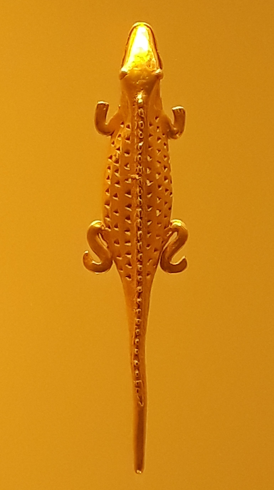

“La ciencia moderna difiere de todas las tradiciones previas de conocimiento en tres puntos fundamentales: a. La disposición a admitir ignorancia b. la centralidad de la observación y de las matemáticas c. La adquisición de nuevos poderes.” Yuval Noah Harari in Sapiens breve historia de la humanidad.
R es un lenguaje de programación que ha democratizado las herramientas estadísticas. R nos permite hacer análisis multivariantes, redes neuronales, inferencias Bayesianas o inteligencia artificial. La velocidad a la que las aplicaciones se producen desborda nuestra capacidad de reacción. Cada vez existen más formas de visualizar y analizar, ofreciéndonos continuamente múltiples perspectivas a datos que crecen en volumen y complejidad. Existe, pues, un gran interés en el uso de estas nuevas herremientas analíticas para la adquisición de nuevos poderes. Sin embargo, a pesar de la obteción rápida de resultados, muchas veces estos son malinterpretados. Esto tal vez se deba a que rara vez nos adentramos en las razones del por qué y el cómo se definen ciertos conceptos estadísticos, prefiriendo saltar rápidamente a sus aplicaciones. Mejorar el entendimiento estadístico no sólo nos permite usar las herramientas eficientemente para las que fueron pensadas, sino que nos ayuda a entender aquello que queremos saber: los fenómenos naturales o procesos de producción, para actuar adecuadamente sobre ellos y no dejar que un algoritmo lo haga por nosoros. Puesta al servicio del entendimiento estadístico, R es una potente herramienta pedagógica. En estos tuturiales, reflexiono sobre conceptos básicos en estadística, desde ejemplos concretos y apoyándome en R.
Durante la última década muchos métodos de análisis han sido desarrollados para el análisis de datos biomédicos de alta dimensionalidad. Esto es, datos con un gran número de variables para muchos individuos. A medida que incrementamos nuestra capacidad de recolectar datos tambíen los métodos de análisis se hacen mas complejos. El objetivo último es intentar usar estas variables como biomarcadores para encontrar subgrupos en la población que respondan mejor a un tratamiento o estén en un riesgo mayor a padecer algún tipo de enfermedad, y ayudar así al desarrollo de una medicina mas precisa. En este libro ofrecemos los análisis básicos de deberían ser realizados para explicar diferencias clínicas entre individuos, usando datos genómicos, trancriptómicos, metilómicos y exposómicos.
Las aplicaciones de nuevos métodos en el análisis de datos biomédicos de alta dimensionalidad están dirigidas a agrupar los individuos de la población en subgrupos de riesgo para enfermedades comunes como el cancer, el Alzheimer y la obesidad entre otros. Estos son unos ejemplos de mi trabajo en este ámbito que han tenido cobertura en medios de comunicación (Notas de prensa emitidas por ISGlobal y recogidas por los medios)
La pérdida de función de genes clave del cromosoma Y incrementa el riesgo de los hombres de padecer cáncer. Nota de Prensa
Identificadas nuevas variantes genéticas asociadas al bienestar, la depresión y la neurosis. Nota de prensa
Inversion genómica común del genoma humano que protege del asma y la obesidad. Nota de Prensa
El mosaicismo genético tiene relación con el envejecimiento y el cáncer. Nota de Prensa
Un estudio sobre cáncer colorrectal premiado como mejor trabajo científico español en literatura internacional. Nota de Prensa

Soy estadístico/bioinformático del Instituto de Salud Global de Barcelona, en donde desarrollo métodos estadísticos para datos biomédicos. También soy profesor adjunto de estadística de la Universitat Politècnica de Catalunya. Fuí analísta de datos en el Instituto de psiquiatría de King’s college London y tengo un doctorado en física del Laboratorio Cavendish en la Universidad de Cambridge (Reino Unido).